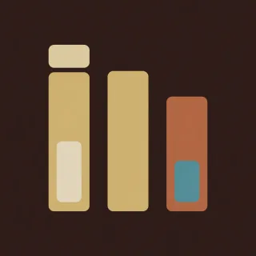

Pieces · handpan piece for D Kurd
Lope
Long, short. Each beat is a hit, a gap, and a late hit, so the whole thing limps.

- Kind
- Pieces
- Tempo
- 96 BPM
- Time signature
- 4/4
- Length
- 30 bars, about 75 seconds
- Notes used
- D3, A3, B♭3, C4, D4, E4, F4, G4, A4, C5
- Added
- 2026-10-11
Play in AlamutLearn bar by bar
About this pattern
Count 1 e and a. Play on 1 and on a, and leave e and and empty. That long short step is the whole feel. Lope is the ding on 1 and 3 with the low A and D as the late hits. Reply keeps the ding and lets a tune answer it in the gaps, up to the high C and back down. Climb is the same step with each bar reaching one note higher. Keep the late hits light or the limp turns into a march.
Notation
Each line is one bar in 4/4. Numbers are the pan's fields, a dot is a rest, brackets hold notes struck together, and × is a tak on the shoulder. Read the number legend below.
Lope
0 . . 1 4 . . 1 0 . . 3 4 . . 10 . . 1 4 . . 1 0 . . 3 6 . . 50 . . 2 3 . . 2 0 . . 3 4 . . 10 . . 1 4 . . 1 0 . . 3 6 . . 7
Reply
0 . . 1 4 . . 3 0 . . 5 4 . . .0 . . 1 4 . . 5 0 . . 6 5 . . .0 . . 3 4 . . 5 0 . . 7 6 . . 50 . . 1 4 . . . 0 . . 3 4 . . .0 . . 5 6 . . 7 0 . . 9 8 . . 70 . . 9 8 . . 7 0 . . 6 5 . . .0 . . 5 4 . . 3 0 . . 2 1 . . .0 . . 1 4 . . . 0 . . 1 4 . . .
Climb
0 . . 1 4 . . 3 0 . . 1 4 . . 50 . . 3 4 . . 5 0 . . 3 6 . . 70 . . 5 6 . . 7 0 . . 5 8 . . 70 . . 7 8 . . 9 0 . . 9 8 . . 9
Reply
0 . . 1 4 . . 3 0 . . 5 4 . . .0 . . 1 4 . . 5 0 . . 6 5 . . .0 . . 3 4 . . 5 0 . . 7 6 . . 50 . . 1 4 . . . 0 . . 3 4 . . .0 . . 5 6 . . 7 0 . . 9 8 . . 70 . . 9 8 . . 7 0 . . 6 5 . . .0 . . 5 4 . . 3 0 . . 2 1 . . .0 . . 1 4 . . . 0 . . 1 4 . . .
Lope
0 . . 1 4 . . 1 0 . . 3 4 . . 10 . . 1 4 . . 1 0 . . 3 6 . . 50 . . 2 3 . . 2 0 . . 3 4 . . 10 . . 1 4 . . 1 0 . . 3 6 . . 7
Close
0 . . 1 4 . . . 0 . . . . . . .[01] . . . . . . . . . . . . . . .
Number legend
0D3 (ding), 146.8 Hz1A3, 220.0 Hz2B♭3, 233.1 Hz3C4, 261.6 Hz4D4, 293.7 Hz5E4, 329.6 Hz6F4, 349.2 Hz7G4, 392.0 Hz8A4, 440.0 Hz9C5, 523.3 Hz×tak, a rim or shoulder tap
لنگان
بلند، کوتاه. هر ضرب یک ضربه است، یک مکث، و یک ضربهٔ دیر؛ پس کل قطعه میلنگد.
بشمارید ۱ اِ و اَ. روی ۱ و روی اَ بزنید و اِ و «و» را خالی بگذارید. همین قدم بلند و کوتاه کل حس قطعه است. «لنگان» دینگ روی ۱ و ۳ است، با لای بم و رِ بهعنوان ضربههای دیر. «پاسخ» دینگ را نگه میدارد و میگذارد ملودی در فاصلهها جوابش را بدهد، تا دوی بالا و برگشت. «بالا رفتن» همان قدم است و هر میزان یک نت بالاتر میرسد. ضربههای دیر را سبک نگه دارید، وگرنه لنگیدن به مارش تبدیل میشود.
More Pieces
Original pieces with named sections, written for this instrument.